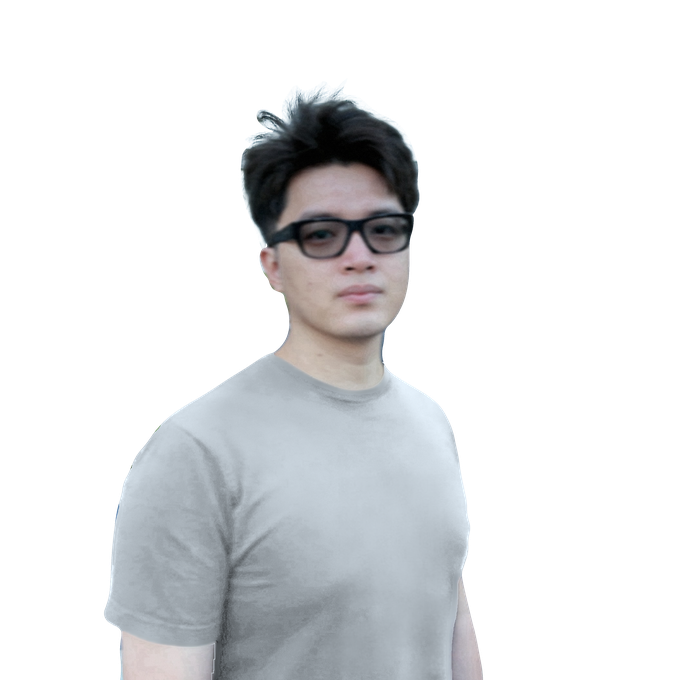

Sep 2026 – present
NVIDIA Research
Research Scientist
Architecture Research Group. Research on next-generation chip architectures and agentic systems for hardware design.
AI for chip design / Computer architecture / EDA

I work on AI for chip design: bringing coding agents into computer architecture and electronic design automation (EDA), with independent review and executable checks deciding when the work is done.
I received my Ph.D. in Computer Science from UCLA in September 2026, advised by Tony Nowatzki in the PolyArch Research Group. My dissertation, Loom, is a full-stack framework for compiling to and exploring heterogeneous multi-core spatial accelerators. My work on programmable accelerators received a MICRO Best Paper Runner-up award and IEEE Micro Top Picks recognition.
My research aims to make specialized hardware easier to design and program. During my Ph.D. I built compilers, generators, and exploration tools for programmable accelerators; my current work asks how agents can carry out this kind of engineering reliably.
2026 – present
Coding agents make implementation cheap, but deciding when the work is correct and complete is still hard. I build workflows that keep the two apart: a builder agent works from a plan approved by a human, a reviewer from another vendor decides completion, and deterministic hooks enforce mechanical gates in between. I apply these workflows to architecture and EDA work; one public example is a 567-file migration of the gem5 build system, now in upstream review.
Creator of Humanize 1
I created Humanize 1 at UCLA: an implementation and independent-review loop for coding agents. I am a founding member of Humanfia, where we extend this approach to longer engineering tasks.
Open source, 2026
Migration of gem5's SCons build to CMake and Ninja with a Bazel overlay (567 files, 133 commits), produced by a Humanize builder-reviewer loop and validated by full builds, unit tests, and matching simulation objects; awaiting upstream review.
Ph.D. research, 2018 – 2026
At UCLA I worked on making specialized hardware general enough to reuse and practical to build: accelerator architectures for irregular and graph workloads, compilers and generators for programmable accelerators and FPGA overlays, networks-on-chip for multi-chiplet FPGA systems, and Loom, a full-stack framework for compiling to and exploring heterogeneous accelerator systems.
Ph.D. dissertation, 2026
A compiler and exploration framework for heterogeneous multi-core spatial accelerators, connecting a shared hardware model, compilation, simulation, and reproducible evaluation.
Research, 2025 - 2026
Characterization of hardened FPGA networks-on-chip and hierarchical network overlays for multi-chiplet reconfigurable systems.
ISCA 2020 / MICRO 2022
Automated generation of programmable spatial architectures and FPGA overlays, bringing compilation, hardware implementation, and design-space exploration into one flow.
Grouped by research line, newest first. * Equal contribution. Google Scholar
Sep 2026 – present
Research Scientist
Architecture Research Group. Research on next-generation chip architectures and agentic systems for hardware design.
2019 – 2026
Doctoral Researcher
Advisor: Tony Nowatzki. Programmable spatial accelerators, compiler and hardware co-design, FPGA overlays, on-chip networks, and full-stack architecture exploration.
Jun 2022 – Oct 2023
Hardware Engineering Intern
Memory management unit ownership; load/store and cache subsystem design and verification. Full-time summer and part-time academic-year appointments.
2019 – 2026
Ph.D. in Computer Science
Advisor: Tony Nowatzki. Dissertation: Loom: Full-Stack Compilation and Automated Exploration of Heterogeneous Multi-Core Spatial Accelerator Systems.
2019 – 2021
M.S. in Computer Science
2015 – 2019
B.Eng. in Electrical Engineering
Summer research: UCLA PolyArch Research Group (Summer 2018); University of Lausanne (2017).
2022
PolyGraph
2021
DSAGEN
2020
SPU
2019
UCLA
Artifact Evaluation Committee, HPCA 2021.
Journal reviewer: ACM TACO, ACM TODAES, ACM TRETS, ACM TECS, IEEE TC, IEEE TCAD, IEEE TVLSI, IEEE CAL, IEEE JETCAS, Journal of Systems Architecture, Journal of Signal Processing Systems.